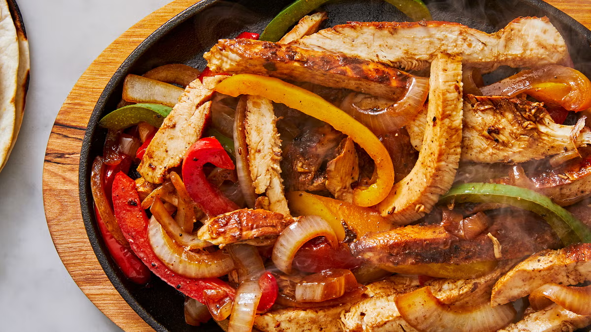

Chicken Fajitas

Description
Chicken fajitas are a flavorful and easy dish that’s perfect for a quick dinner.
With tender chicken, vibrant vegetables, and all the classic fajita seasonings,
they’re sure to be a crowd-pleaser! Here's how to make them from scratch.
Ingredients
- 3 boneless skinless chicken breasts
- 1 medium onion
- 1 lime
- 3 bell peppers red, yellow, green or orange
- 3 tablespoons olive oil divided
- 1 tablespoon chili powder
- 2 teaspoons cumin
- 2 teaspoons smoked paprika
- 2 teaspoons garlic powder
- 1 teaspoon onion powder
- 1/2 teaspoon salt to taste
- 1/2 teaspoon black pepper
- 1/4 teaspoon cayenne pepper
Steps
- Cut onion into slivers & slice peppers
- In a separate bowl, combine 1 tablespoon olive oil, juice of 1/2 lime, chili powder,
paprika, onion powder, pepper, cumin and salt. Cut chicken into strips and toss with
the spice mixture.
- Preheat 1 tablespoon olive oil over medium high. Add ½ of the chicken and cook until
just cooked, about 3-5 minutes. Remove from pan and set aside. Repeat with remaining
chicken.
- Set chicken aside and add 1 tablespoon oil to the pan. Add onions to the pan and cook
2 minutes. Add in sliced peppers and cook an additional 2 minutes or just until hot.
Add chicken back to the pan and stir to combine.
Squeeze additional lime overtop, with some sour cream, and serve over tortillas or rice. Another great healthy meal!